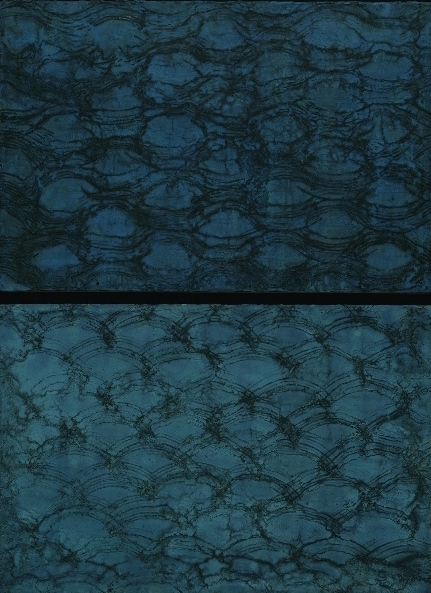
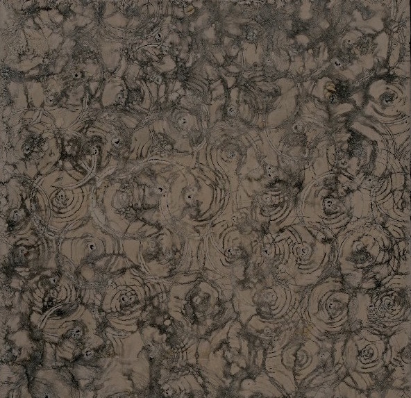
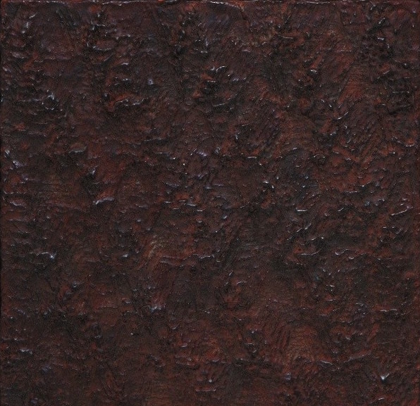
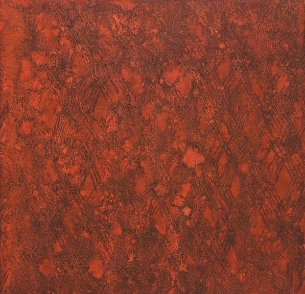

Series 2007-2009
Sedimentary Series: Terra – Sienna, Dyptich |
Beeswax, pigment, graphite, asphaltum on panel | 44” x 76” installed
Sedimentary Series: Terra – Aquamarine,
Dyptich | Beeswax, pigment, graphite on panel | 38” x 76” installed
Sedimentary Series: Terra – Crepescule |
Beeswax, pigment, graphite on panel | 38” x 76” installed

Blues in the Night, Dyptich |
Beeswax, pigment, graphite on panel | 32” x 24” installed

Night Seas |
Beeswax, pigment, graphite on panel | 16” x 24”

Terra – Clay, #1 |
Beeswax, pigment, graphite on panel | 16” x 16”
Terra – Clay, #3 |
Beeswax, pigment, graphite relief on panel | 16” x 16” 24” x 24”

Terra – Cinnabar, 4 |
Beeswax, pigment, graphite relief on panel | 16” x 16

Terra – Cinnabar, #1 |
Beeswax, pigment, graphite on panel | 16” x 16”
Terra – Cinnabar, #3 |
Beeswax, pigment, graphite relief on panel | 16” x 16”